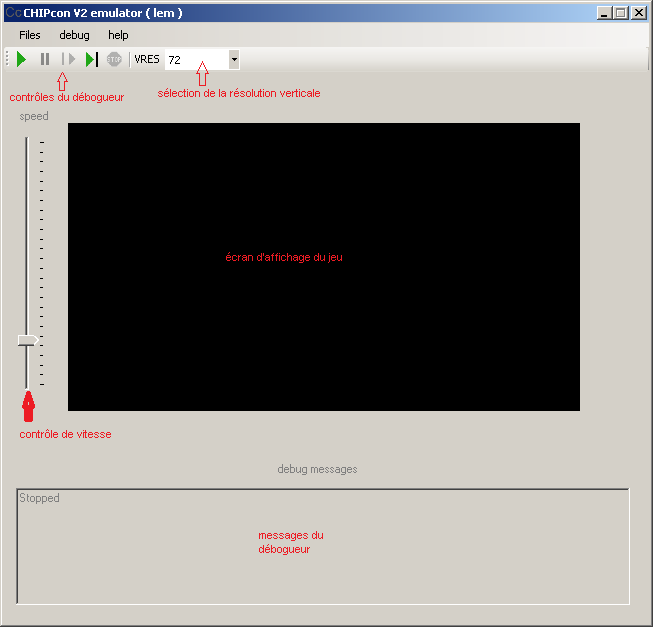
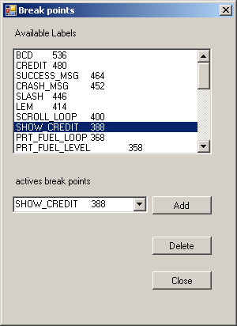
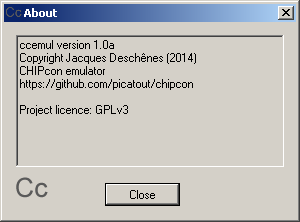
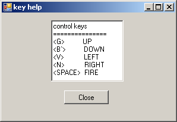

introduction
Ce document fait partie du projet CHIPcon_v2. Il documente l'émulateur/débogueur de la machine virtuelle.
L'ensemble du projet logiciel ainsi que la documentation est sous licence GPLv3. La partie matériel est OSH
émulateur SCHIP+
Présentation
cc2emul.exe est émulateur pour la machine virtuelle SCHIP+ avec support pour le déboguage. C'est une application windows écrite en C# développée avec SharpDevelop 5.0.
cc2emul.exe permet d'installer des points d'arrêt et de faire du pas à pas dans l'application et d'examiné les états de la machine virtuelle.
Interface utilisateur
Voici de quoi à l'air l'application avec un jeu chargé.

La vitesse d'exécution peut-être contrôlée avec le bouton à gauche de l'écran d'affichage du jeux. La résolution verticale
peut-être modifiée à partir de la liste déroulante VRES qui apparaît dans la barre d'outil.
barre de menu
Le menu ne contient que 3 éléments:
- Files, dans ce menu on retrouve les items suivants:
- Open... pour ouvrir un fichier binaire de jeu.
- Reload last file recharge le dernier fichier.
- Restart réinitialise la machhine virtuelle et redémarre le jeu.
- Quit pour quitter l'émulateur.
- Debug
- Break point... qui ouvre la boite de dialogue Breakpoint, permettant d'ajouter ou de supprimer des points d'arrêts. La liste des étiquetes disponibles est
chargée à partir d'un fichier *.lbl créé par l'assembleur cc2asm.exe en même temps que le fichier binaire du jeu. Pour obtenir
ce fichier il faut utilisé l'option -s symbol_file lors de l'invocation de l'assembleur.

- Clear break points efface tous les poins d'arrêt.
- Load labels file permet de rechargé le fichier des symboles.
- Help
- About affiche la boite message About...

.
- Keys...Affiche la boite message indiquant les touches à utiliser pour contrôler le jeu.

barre d'outils
Une info bulle est affichée lorsqu'on place le curseur de la souris au dessus d'un bouton. Les 5 boutons
de gauche de la barre d'outil servent au déboguage ils sont dans l'ordre de gauche à droite:
- restart, redémarrage du jeu.
- Suspend, suspend l'exécution. A partir du mode suspension il est possible d'utiliser les 3 boutons qui suivent à sa droite.
- Resume, redémarre à partir de l'endroit où le jeu a été suspendu.
- Step, exécute la prochaine instruction et s'arrête, exécution pas à pas. Permet d'examiner les registres de
la VM à chaque étape.
- Stop arrête l'exécution du jeu et réinialise la machine virtuelle à l'adresse 0.
Finalement le combo box VRES déroule une liste de résolution verticale pour l'écran du jeu. Lorsqu'on change la
résolution l'écran du jeu s'ajuste en conséquence. On ne peut redimensionné que lorsque la machine virtuelle est à l'état
arrêtée. Ajustez VRES en fonction de l'option que vous avez choisi lors de la compilation du projet CHIPcon v2.
Utilisation
Lorsqu'un jeu est chargé dans l'émulateur il démarre automatiquement. On peut l'arrêter avec le bouton stop.
Ensuite ouvrir le dialogue break points à partir du menu Debug. Si cc2emul trouve un fichier avec le
même nom que jeu mais avec l'extension .lbl il le charge en même temps que le jeu et la liste des étiquetttes
définies dans le programme source avec l'adresse associé apparaît dans la liste. Pour ajouter un point d'arrêt il
s'agit de sélectionner un symbole dans la liste et de cliquer sur le bouton add. Notez que tous les symboles
sont affichés dans la liste, ceux des données aussi bien que ceux des sous-routines. Il est inutile de mettre un
point d'arrêt sur un symbole de donnée puisque le compteur ordinal ne s'y rend jamais.
Lorsque le programme tourne il s'arrête au premier point d'arrêt rencontré et affiche les états de la VM. A partir de
là on peu utiliser les boutons de débogage de la barre d'outil.